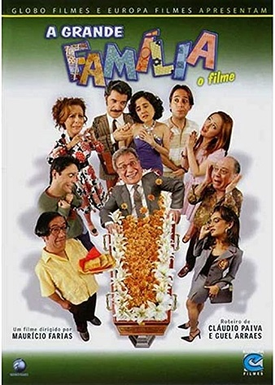

Filmes de Comédia Nacionais
Os FarofeirosQuatro colegas de trabalho se programam para curtir o feriado prolongado em uma casa de praia. Lá, eles descobrem que se meteram em uma tremenda roubada. | Lisbela e o PriosioneiroA jovem Lisbela adora ir ao cinema e vive sonhando com os galãs de Hollywood dos filmes que assiste. Leléu é um malandro conquistador, que em meio a uma de suas muitas aventuras chega à cidade da moça. Após se conhecerem eles logo se apaixonam, mas Lisbela está de casamento marcado. Em meio às dúvidas e aos problemas familiares que a nova paixão desperta, há ainda a presença de um matador que está atrás de Leléu, devido a ele ter se envolvido com sua esposa no passado. |
Se eu fosse você
Cláudio e Helena são casados há muitos anos e enfrentam a rotina do casamento. Um dia eles são atingidos por um fenômeno inexplicável e trocam de corpos. Apavorados, eles tentam lidar com a situação até encontrar uma solução para reverter o acontecimento bizarro. Mas à medida que vão enfrentando obstáculos, eles passam a aprender e a entender mais sobre o outro. |
Minha mãe é uma peça
Dona Hermínia é uma mulher de meia idade, divorciada do marido, que a trocou por uma mais jovem. Hiperativa, ela não larga o pé de seus filhos Marcelina e Juliano, que já estão bem grandinhos. Um dia, após descobrir que eles a consideram uma chata, resolve sair de casa sem avisar ninguém, deixando todos, de alguma forma, preocupados com o que teria acontecido. Mal sabem eles que a mãe foi visitar a querida tia Zélia para desabafar suas tristezas do presente e recordar os bons tempos do passado. |
Tudo bem no Natal que VemJorge sofre um acidente na véspera do Natal e acorda um ano depois, sem lembranças do que ocorreu nesse período de tempo. |
A Grande Família: O FilmeImpressionado com a morte de um colega de trabalho, Lineu passa mal e vai ao médico. Ele acha que morrerá em breve e se deprime, recusando-se a ir ao tradicional baile em que conheceu Nenê. Sentindo-se rejeitada, ela convida um ex-namorado para provocar o marido. |